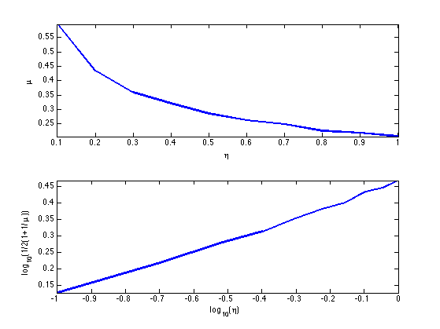
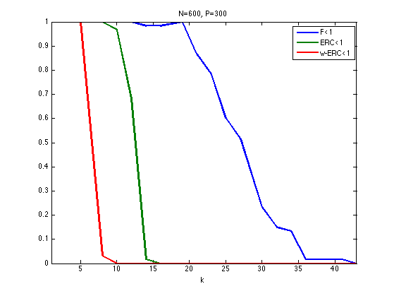
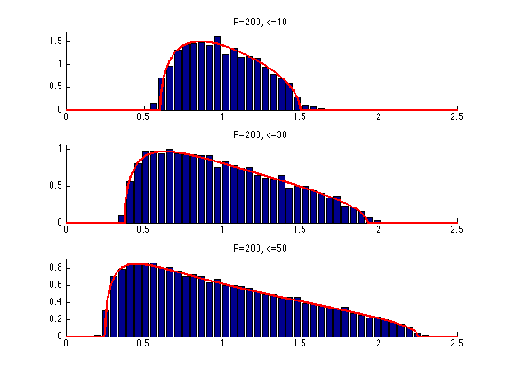
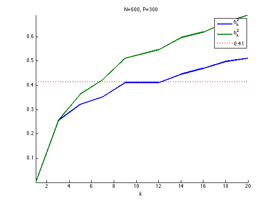
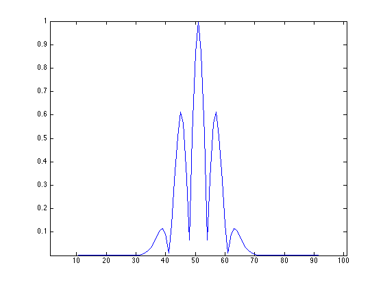
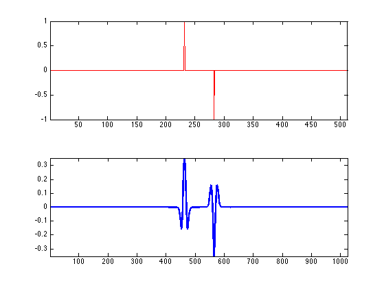
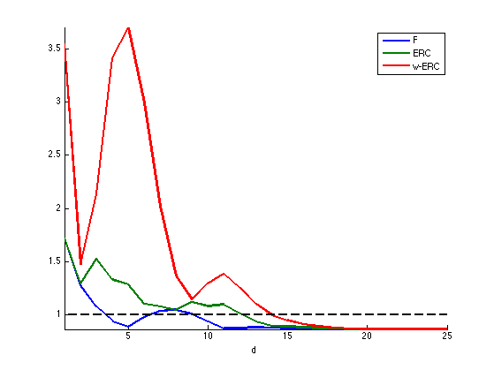

Performance of Sparse Recovery Using L1 Minimization
This tour explores theoritical garantees for the performance of recovery using \(\ell^1\) minimization.
Contents
Installing toolboxes and setting up the path.
You need to download the following files: signal toolbox and general toolbox.
You need to unzip these toolboxes in your working directory, so that you have toolbox_signal and toolbox_general in your directory.
For Scilab user: you must replace the Matlab comment '%' by its Scilab counterpart '//'.
Recommandation: You should create a text file named for instance numericaltour.sce (in Scilab) or numericaltour.m (in Matlab) to write all the Scilab/Matlab command you want to execute. Then, simply run exec('numericaltour.sce'); (in Scilab) or numericaltour; (in Matlab) to run the commands.
Execute this line only if you are using Matlab.
getd = @(p)path(p,path); % scilab users must *not* execute this
Then you can add the toolboxes to the path.
getd('toolbox_signal/'); getd('toolbox_general/');
Sparse \(\ell^1\) Recovery
We consider the inverse problem of estimating an unknown signal \(x_0 \in \RR^N\) from noisy measurements \(y=\Phi x_0 + w \in \RR^P\) where \(\Phi \in \RR^{P \times N}\) is a measurement matrix with \(P \leq N\), and \(w\) is some noise.
This tour is focused on recovery using \(\ell^1\) minimization \[ x^\star \in \uargmin{x \in \RR^N} \frac{1}{2}\norm{y-\Phi x}^2 + \la \normu{x}. \]
Where there is no noise, we consider the problem \( \Pp(y) \) \[ x^\star \in \uargmin{\Phi x = y} \normu{x}. \]
We are not concerned here about the actual way to solve this convex problem (see the other numerical tours on sparse regularization) but rather on the theoritical analysis of wether \(x^\star\) is close to \(x_0\).
More precisely, we consider the following three key properties
- Noiseless identifiability: \(x_0\) is the unique solution of \( \Pp(y) \) for \(y=\Phi x_0\).
- Robustess to small noise:: one has \(\norm{x^\star - x_0} = O(\norm{w})\) for \(y=\Phi x_0+w\) if \(\norm{w}\) is smaller than an arbitrary small constant that depends on \(x_0\) if \(\la\) is well chosen according to \(\norm{w}\).
- Robustess to bounded noise: same as above, but \(\norm{w}\) can be arbitrary.
Note that noise robustness implies identifiability, but the converse is not true in general.
Coherence Criteria
The simplest criteria for identifiality are based on the coherence of the matrix \(\Phi\) and depends only on the sparsity \(\norm{x_0}_0\) of the original signal. This criteria is thus not very precise and gives very pessimistic bounds.
The coherence of the matrix \(\Phi = ( \phi_i )_{i=1}^N \in \RR^{P \times N}\) with unit norm colum \(\norm{\phi_i}=1\) is \[ \mu(\Phi) = \umax{i \neq j} \abs{\dotp{\phi_i}{\phi_j}}. \]
Compute the correlation matrix (remove the diagonal of 1's).
remove_diag = @(C)C-diag(diag(C)); Correlation = @(Phi)remove_diag(abs(Phi'*Phi));
Compute the coherence \(\mu(\Phi)\).
maxall = @(C)max(C(:)); mu = @(Phi)maxall(Correlation(Phi));
The condition \[ \normz{x_0} < \frac{1}{2}\pa{1 + \frac{1}{\mu(\Phi)}} \] implies that \(x_0\) is identifiable, and also implies to robustess to small and bounded noise.
Equivalently, this condition can be written as \(\text{Coh}(\normz{x_0})<1\) where \[ \text{Coh}(k) = \frac{k \mu(\Phi)}{ 1 - (k-1)\mu(\Phi) } \]
Coh = @(Phi,k)(k * mu(Phi)) / ( 1 - (k-1) * mu(Phi) );
Generate a matrix with random unit columns in \(\RR^P\).
normalize = @(Phi) Phi ./ repmat(sqrt(sum(Phi.^2)), [size(Phi,1) 1]); PhiRand = @(P,N)normalize(randn(P,N)); Phi = PhiRand(250,1000);
Compute the coherence and the maximum possible sparsity to ensure recovery using the coherence bound.
c = mu(Phi); fprintf('Coherence: %.2f\n', c); fprintf('Sparsity max: %d\n', floor(1/2*(1+1/c)) );
Coherence: 0.30 Sparsity max: 2
Exercice 1: (check the solution) Display how the average coherence of a random matrix decays with the redundancy \(\eta = P/N\) of the matrix \(\Phi\). Can you derive an empirical law between \(P\) and the maximal sparsity?
exo1;
Support and Sign-based Criteria
In the following we will consider the support \[ \text{supp}(x_0) = \enscond{i}{x_0(i) \neq 0} \] of the vector \(x_0\). The co-support is its complementary \(I^c\).
supp = @(s)find(abs(s)>1e-5); cosupp = @(s)find(abs(s)<1e-5);
Given some support \( I \subset \{0,\ldots,N-1\} \), we will denote as \( \Phi = (\phi_m)_{m \in I} \in \RR^{N \times \abs{I}}\) the sub-matrix extracted from \(\Phi\) using the columns indexed by \(I\).
J.J. Fuchs introduces a criteria \(F\) for identifiability that depends on the sign of \(x_0\).
J.J. Fuchs. Recovery of exact sparse representations in the presence of bounded noise. IEEE Trans. Inform. Theory, 51(10), p. 3601-3608, 2005
Under the condition that \(\Phi_I\) has full rank, the \(F\) measure of a sign vector \(s \in \{+1,0,-1\}^N\) with \(\text{supp}(s)=I\) reads \[ \text{F}(s) = \norm{ \Psi_I s_I }_\infty \qwhereq \Psi_I = \Phi_{I^c}^* \Phi_I^{+,*} \] where \( A^+ = (A^* A)^{-1} A^* \) is the pseudo inverse of a matrix \(A\).
The condition \[ \text{F}(\text{sign}(x_0))<1 \] implies that \(x_0\) is identifiable, and also implies to robustess to small noise. It does not however imply robustess to a bounded noise.
Compute \(\Psi_I\) matrix.
PsiI = @(Phi,I)Phi(:, setdiff(1:size(Phi,2),I) )' * pinv(Phi(:,I))';
Compute \(\text{F}(s)\).
F = @(Phi,s)norm(PsiI(Phi,supp(s))*s(supp(s)), 'inf');
The Exact Recovery Criterion (ERC) of a support \(I\), introduced by Tropp in
J. A. Tropp. Just relax: Convex programming methods for identifying sparse signals. IEEE Trans. Inform. Theory, vol. 52, num. 3, pp. 1030-1051, Mar. 2006.
Under the condition that \(\Phi_I\) has full rank, this condition reads \[ \text{ERC}(I) = \norm{\Psi_{I}}_{\infty,\infty} = \umax{j \in I^c} \norm{ \Phi_I^+ \phi_j }_1. \] where \(\norm{A}_{\infty,\infty}\) is the \(\ell^\infty-\ell^\infty\) operator norm of a matrix \(A\), computed with the Matlab command norm(A,'inf').
erc = @(Phi,I)norm(PsiI(Phi,I), 'inf');
The condition \[ \text{ERC}(\text{supp}(x_0))<1 \] implies that \(x_0\) is identifiable, and also implies to robustess to small and bounded noise.
One can prove that the ERC is the maximum of the F criterion for all signs of the given support \[ \text{ERC}(I) = \umax{ s, \text{supp}(s) \subset I } \text{F}(s). \]
The weak-ERC is an approximation of the ERC using only the correlation matrix \[ \text{w-ERC}(I) = \frac{ \umax{j \in I^c} \sum_{i \in I} \abs{\dotp{\phi_i}{\phi_j}} }{ 1-\umax{j \in I} \sum_{i \neq j \in I} \abs{\dotp{\phi_i}{\phi_j}} }\]
g = @(C,I)sum(C(:,I),2); werc_g = @(g,I,J)max(g(J)) / (1-max(g(I))); werc = @(Phi,I)werc_g( g(Correlation(Phi),I), I, setdiff(1:size(Phi,2),I) );
One has, if \(\text{w-ERC}(I)>0\), for \( I = \text{supp}(s) \), \[ \text{F}(s) \leq \text{ERC}(I) \leq \text{w-ERC}(I) \leq \text{Coh}(\abs{I}). \]
This shows in particular that the condition \[ \text{w-ERC}(\text{supp}(x_0))<1 \] implies identifiability and robustess to small and bounded noise.
Exercice 2: (check the solution) Show that this inequality holds on a given matrix. What can you conclude about the sharpness of these criteria ?
exo2;
N=2000, P=1990, |I|=6 F(s) =0.21 ERC(I) =0.27 w-ERC(s)=0.30 Coh(|s|)=1.72
Exercice 3: (check the solution) For a given matrix \(\Phi\) generated using PhiRand, draw as a function of the sparsity \(k\) the probability that a random sign vector \(s\) of sparsity \(\norm{s}_0=k\) satisfies the conditions \(\text{F}(x_0)<1\), \(\text{ERC}(x_0)<1\) and \(\text{w-ERC}(x_0)<1\)
exo3;
Restricted Isometry Criteria
The restricted isometry constants \(\de_k^1,\de_k^2\) of a matrix \(\Phi\) are the smallest \(\de^1,\de^2\) that satisfy \[ \forall x \in \RR^N, \quad \norm{x}_0 \leq k \qarrq (1-\de^1)\norm{x}^2 \leq \norm{\Phi x}^2 \leq (1+\de^2)\norm{x}^2. \]
E. Candes shows in
E. J. Candès. The restricted isometry property and its implications for compressed sensing. Compte Rendus de l'Academie des Sciences, Paris, Serie I, 346 589-592
that if \[ \de_{2k} \leq \sqrt{2}-1 ,\] then \(\norm{x_0} \leq k\) implies identifiability as well as robustness to small and bounded noise.
The stability constant \(\la^1(A), \la^2(A)\) of a matrix \(A = \Phi_I\) extracted from \(\Phi\) is the smallest \(\tilde \la_1,\tilde \la_2\) such that \[ \forall \al \in \RR^{\abs{I}}, \quad (1-\tilde\la_1)\norm{\al}^2 \leq \norm{A \al}^2 \leq (1+\tilde \la_2)\norm{\al}^2. \]
These constants \(\la^1(A), \la^2(A)\) are easily computed from the largest and smallest eigenvalues of \(A^* A \in \RR^{\abs{I} \times \abs{I}}\)
minmax = @(v)deal(1-min(v),max(v)-1); ric = @(A)minmax(eig(A'*A));
The restricted isometry constant of \(\Phi\) are computed as the largest stability constants of extracted matrices \[ \de^\ell_k = \umax{ \abs{I}=k } \la^\ell( \Phi_I ). \]
The eigenvalues of \(\Phi\) are essentially contained in the interval \( [a,b] \) where \(a=(1-\sqrt{\be})^2\) and \(b=(1+\sqrt{\be})^2\) with \(\beta = k/P\) More precisely, as \(k=\be P\) tends to infinity, the distribution of the eigenvalues tends to the Marcenko-Pastur law \( f_\be(\la) = \frac{1}{2\pi \be \la}\sqrt{ (\la-b)^+ (a-\la)^+ }. \)
Exercice 4: (check the solution) Display, for an increasing value of \(k\) the histogram of repartition of the eigenvalues \(A^* A\) where \(A\) is a Gaussian matrix of size \((P,k)\) and variance \(1/P\). For this, accumulate the eigenvalues for many realization of \(A\).
exo4;
Exercice 5: (check the solution) Estimate numerically lower bound on \(\de_k^1,\de_k^2\) by Monte-Carlo sampling of sub-matrices.
exo5;
Sparse Spikes Deconvolution
We now consider a convolution dictionary \( \Phi \). Such a dictionary is used with sparse regulariz
Second derivative of Gaussian kernel \(g\) with a given variance \(\si^2\).
sigma = 6; g = @(x)(1-x.^2/sigma^2).*exp(-x.^2/(2*sigma^2));
Create a matrix \(\Phi\) so that \(\Phi x = g \star x\) with periodic boundary conditions.
P = 1024; [Y,X] = meshgrid(1:P,1:P); Phi = normalize(g(mod(X-Y+P/2, P)-P/2));
To improve the conditionning of the dictionary, we sub-sample its atoms, so that \( P = \eta N > N \).
eta = 2; N = P/eta; Phi = Phi(:,1:eta:end);
Plot the correlation function associated to the filter. Can you determine the value of the coherence \(\mu(\Phi)\)?
c = Phi'*Phi; c = abs(c(:,end/2)); clf; h = plot(c(end/2-50:end/2+50), '.-'); set(h, 'LineWidth', 1); axis tight;
Create a data a sparse \(x_0\) with two diracs of opposite signes with spacing \(d\).
twosparse = @(d)circshift([1; zeros(d,1); -1; zeros(N-d-2,1)], round(N/2-d/2));
Display \(x_0\) and \(\Phi x_0\).
x0 = twosparse(50); clf; subplot(2,1,1); h = plot(x0, 'r'); axis tight; subplot(2,1,2); h = plot(Phi*x0, 'b'); axis tight; set(h, 'LineWidth', 2);
Exercice 6: (check the solution) Plot the evolution of the criteria F, ERC and Coh as a function of \(d\). Do the same plot for other signs patterns for \(x_0\). Do the same plot for a Dirac comb with a varying spacing \(d\).
exo6;